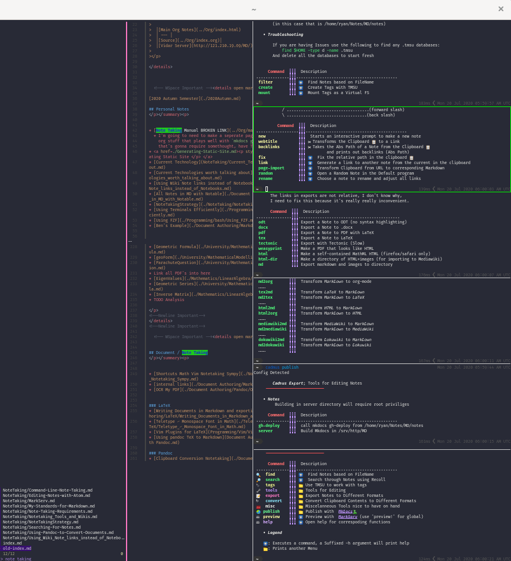

Cadmus!¶
Cadmus is a knowledge management tool in your terminal.

What does it do¶
Cadmus provides command driven interface to find and edit Markdown files, such as finding by name, searching for terms, filtering by tags, generating backlinks and generating relative links to other notes.
How does it Work¶
Cadmus is just a bunch of shell scripts that essentially use pipes and ripgrep with skim to display them.
How Do i Use It¶
Installation¶
cadmus is available on the AUR, generally however cadmus will operate in a portable fashion from =~/.cadmus/=, so just using git is fine as well:
cd $(mktemp -d)
wget https://raw.githubusercontent.com/RyanGreenup/cadmus/master/install.sh
bash install.sh
Note
To remove it it is sufficient to perform:
rm -rf "$HOME/.cadmus"
rm ~/.local/bin/cadmus
Warning
This assumes that the dependencies have all been installed and recoll is indexing the directory of your notes.
Usage¶
Just run cadmus at the terminal and it will walk you through generating a config file. Afterwards running cadmus will show various commands such as find and search that can be used to work with your knowledge base.
Note
Shortly functionality will be implemented to allow creating a .cadmus file in any directory that will act as a config for all markdown files beneath that directory, this is useful if you want to use cadmus with documentation for a project and still have access to your notes, or have multiple knowledge bases.
When or Why Would I Use This¶
Well I wrote this because my interests are Math and Data Sci and quite frankly I suffer from information overload, I like open-source stuff, simple scripts and unix philosophy so if any of that resonates with you try it out.
This is all modular so take what you like and reimplement it, fork it, make PR's and please fell free to post issues even if it's just to say Hey, I like tool x have you tried it before?.
Background¶
The idea of cadmus is to demonstrate how powerful the terminal can be and how it can act as a functional replacement for tools like OneNote or Evernote.
In reality Cadmus is just a couple of shell scripts to help users tie together other really good tools like Skim, ripgrep, recoll and TMSU.
keyboard bindings¶
| Command | Shortcut | Description |
|---|---|---|
cadmus find |
Ctrl-Q | switch between find and grep in skim |
Dependencies¶
- bat
- cut
- fd
- find
- fzf
- GNU realpath
- grep
- highlight
- jq Arch | brew | ubuntu
- mdcatAUR
- node
- Pandoc
- perl
- python
- ranger
- recode
- Recoll
-
- Make sure to include
pcre2, this comes in Arch, if usingcargo:cargo install ripgrep --features 'pcre2'
- Make sure to include
- sed
- skim
- tmsuAUR
- xclip or wl-clipboard
Recommended for all Features¶
- iproute2 (for the ip binary)
- if you're on mac this stackExchange answer suggests iproute2 may work
- tectonic
- texlive
- Kitty
- I've also heard good things about iterm2
- MkDocs
- nvim
- tectonic
- WeasyPrint
Interesting / Helpful / Recommended Generally (Not strictly necessary)¶
- guake or yakuake
- MarkText
- mdless
- readability-cli
- VNote
- VSCode
PATH¶
If any dependencies are installed with pip or cargo it will be necessary to add these directories to your PATH:
## bash
echo '
export PATH="$HOME/.local/bin:$PATH"
export PATH="$HOME/.cargo/bin:$PATH"
' >> ~/.bashrc
## zsh
echo '
export PATH="$HOME/.local/bin:$PATH"
export PATH="$HOME/.cargo/bin:$PATH"
' >> ~/.bashrc
## fish
echo '
set PATH $HOME/.local/bin $PATH
set PATH $HOME/bin $PATH
set PATH "$HOME/.cargo/bin $PATH
' >> ~/.config/fish/config.fish